All samples + all scaffolds: infection within diet DEGs
Emily Baker and Maeva A. Techer
2026-08-06
Last updated: 2026-08-06
Checks: 6 1
Knit directory:
gregaria-diet-infection-interaction/
This reproducible R Markdown analysis was created with workflowr (version 1.7.2). The Checks tab describes the reproducibility checks that were applied when the results were created. The Past versions tab lists the development history.
The R Markdown file has unstaged changes. To know which version of
the R Markdown file created these results, you’ll want to first commit
it to the Git repo. If you’re still working on the analysis, you can
ignore this warning. When you’re finished, you can run
wflow_publish to commit the R Markdown file and build the
HTML.
Great job! The global environment was empty. Objects defined in the global environment can affect the analysis in your R Markdown file in unknown ways. For reproduciblity it’s best to always run the code in an empty environment.
The command set.seed(20260427) was run prior to running
the code in the R Markdown file. Setting a seed ensures that any results
that rely on randomness, e.g. subsampling or permutations, are
reproducible.
Great job! Recording the operating system, R version, and package versions is critical for reproducibility.
Nice! There were no cached chunks for this analysis, so you can be confident that you successfully produced the results during this run.
Great job! Using relative paths to the files within your workflowr project makes it easier to run your code on other machines.
Great! You are using Git for version control. Tracking code development and connecting the code version to the results is critical for reproducibility.
The results in this page were generated with repository version 5ebe940. See the Past versions tab to see a history of the changes made to the R Markdown and HTML files.
Note that you need to be careful to ensure that all relevant files for
the analysis have been committed to Git prior to generating the results
(you can use wflow_publish or
wflow_git_commit). workflowr only checks the R Markdown
file, but you know if there are other scripts or data files that it
depends on. Below is the status of the Git repository when the results
were generated:
Ignored files:
Ignored: .DS_Store
Ignored: analysis/output/
Ignored: code/R_timecourse_reference/
Ignored: code/scripts/__pycache__/
Ignored: data/raw_read_counts/DESeq2_output/overlap_DEGs/
Ignored: data/reference/
Ignored: output/.DS_Store
Ignored: output/rmd_runs/
Ignored: output/runs/
Ignored: scripts/.RData
Ignored: scripts/.Rhistory
Untracked files:
Untracked: output/archive/rmd_runs_20260806/placed-unplaced-scaffold-analysis_20260804-152445/placed_unplaced_all_deseq2_results.csv
Untracked: output/archive/site_build_artifacts_20260806/28-placed-unplaced-scaffold-analysis_cache/html/run-deseq2_a47470e453bd1a12bb9fca9d052eda43.rdb
Unstaged changes:
Modified: analysis/01-study-design-data.Rmd
Modified: analysis/02-workflow-reproducibility.Rmd
Modified: analysis/03-count-qc-exploration.Rmd
Modified: analysis/04-deseq2-interaction-model.Rmd
Modified: analysis/05-diet-pairwise-deg.Rmd
Modified: analysis/06-infection-within-diet-deg.Rmd
Modified: analysis/07-deg-overlap-prioritization.Rmd
Modified: analysis/08-publication-figures.Rmd
Modified: analysis/10-go-term-enrichment.Rmd
Modified: analysis/11-outlier-sensitivity.Rmd
Modified: analysis/13-physiology-candidate-genes.Rmd
Modified: analysis/14-all-samples-deseq2-interaction-model.Rmd
Modified: analysis/15-all-samples-diet-pairwise-deg.Rmd
Modified: analysis/16-all-samples-infection-within-diet-deg.Rmd
Modified: analysis/24-all-deg-catalogue.Rmd
Modified: analysis/25-enrichment-term-gene-index.Rmd
Modified: analysis/26-circled-cluster-enrichment.Rmd
Modified: analysis/27-scaffold-origin-audit.Rmd
Modified: analysis/28-placed-unplaced-scaffold-analysis.Rmd
Modified: analysis/29-metarhizium-read-burden.Rmd
Modified: analysis/30-curated-target-gene-figure.Rmd
Modified: analysis/31-all-scaffolds-deg-overlap-prioritization.Rmd
Modified: analysis/32-all-scaffolds-deg-catalogue.Rmd
Modified: analysis/33-all-scaffolds-go-term-enrichment.Rmd
Modified: analysis/34-all-scaffolds-enrichment-term-gene-index.Rmd
Modified: analysis/_site.yml
Modified: analysis/index.Rmd
Modified: analysis/site-style.css
Modified: code/HOST_PATHOGEN_DUAL_RNASEQ.md
Modified: code/cluster.json
Modified: code/pilot/check_host_pathogen_dual_progress.sh
Modified: code/rules/07_host_pathogen_dual_rnaseq.smk
Note that any generated files, e.g. HTML, png, CSS, etc., are not included in this status report because it is ok for generated content to have uncommitted changes.
These are the previous versions of the repository in which changes were
made to the R Markdown
(analysis/06-infection-within-diet-deg.Rmd) and HTML
(docs/06-infection-within-diet-deg.html) files. If you’ve
configured a remote Git repository (see ?wflow_git_remote),
click on the hyperlinks in the table below to view the files as they
were in that past version.
| File | Version | Author | Date | Message |
|---|---|---|---|---|
| Rmd | 5ebe940 | Maeva TECHER | 2026-08-06 | changes analysis |
| html | 5ebe940 | Maeva TECHER | 2026-08-06 | changes analysis |
| html | 1b24ec2 | Maeva TECHER | 2026-07-16 | adding phase related changes |
| html | bceb79b | Maeva TECHER | 2026-07-04 | update outliers removal |
| html | fb64139 | Maeva TECHER | 2026-07-03 | fixed the repo broken link |
| Rmd | 4de8698 | Maeva TECHER | 2026-07-03 | update html |
| html | 4de8698 | Maeva TECHER | 2026-07-03 | update html |
| Rmd | 4ef2181 | Maeva TECHER | 2026-07-03 | Upgrading analysis and figures DEGs |
| html | 4ef2181 | Maeva TECHER | 2026-07-03 | Upgrading analysis and figures DEGs |
Purpose
Step 1 - Test each diet
Compare infected and control fat body samples separately for diets 33, 50, and 83.
Step 2 - Visualize response
Read PCA, MA plots, DEG burden, and full or curated VST heatmaps.
Step 3 - Interpret diet effects
Compare the size, direction, and physiology of infection responses across diets.
This page tests infected versus control samples separately within each diet. This is a simple and readable complement to the full interaction model.
This branch retains all 44 samples and all expression-filtered, non-rRNA host loci from the fresh competitive mapping, including genes on unplaced scaffolds. The parallel placed-chromosome analysis uses the same sample set and thresholds but restricts the tested gene universe.
The reason to split by diet is biological and statistical: infection may not produce the same transcriptional response under every nutritional condition. The full interaction model tests whether diet modifies the infection effect; this page then turns that question into three direct infected-control comparisons that are easier to inspect, plot, and interpret.
Setup and data loading
The code first matches metadata rows to count-matrix columns using the sample labels. This makes the analysis self-contained in the R Markdown file and keeps the model inputs visible before any statistics are run.
knitr::opts_chunk$set(message = FALSE, warning = FALSE)
required <- c("DESeq2", "ggplot2", "EnhancedVolcano", "pheatmap", "ggrepel",
"dplyr", "SummarizedExperiment", "DT")
missing <- required[!vapply(required, requireNamespace, logical(1), quietly = TRUE)]
if (length(missing) > 0) {
stop("Install required packages before knitting: ", paste(missing, collapse = ", "))
}
library(ggplot2)
diet_colors <- c("33" = "#E6862E", "50" = "#2F8F5B", "83" = "#7B4FA3")
treatment_colors <- c("Control" = "#7B8794", "Infected" = "#C85A54")
treatment_fills <- c("Control" = "#D8DEE2", "Infected" = "#F0C7BF")
condition_surface_colors <- c(
"33 Control" = "#F7D6A6",
"33 Infected" = "#C75C1B",
"50 Control" = "#CDE8D5",
"50 Infected" = "#1F6F43",
"83 Control" = "#D8C7E8",
"83 Infected" = "#5B2E83"
)
project_dir <- normalizePath(".", mustWork = TRUE)
run_stamp <- format(Sys.time(), "%Y%m%d-%H%M%S")
out_dir <- file.path(project_dir, "output", "rmd_runs",
paste(params$output_tag, run_stamp, sep = "_"))
dir.create(out_dir, recursive = TRUE, showWarnings = FALSE)
metadata <- read.delim(file.path(project_dir, params$metadata_file),
check.names = FALSE)
metadata$label <- as.character(metadata$label)
metadata$Diet <- factor(metadata$Diet, levels = c("33", "50", "83"))
metadata$Treatment <- relevel(factor(metadata$Treatment), ref = "Control")
counts_path <- file.path(project_dir, params$counts_file)
counts_raw <- if (grepl("[.]tsv$", counts_path, ignore.case = TRUE)) {
read.delim(counts_path, check.names = FALSE)
} else {
read.csv(counts_path, check.names = FALSE)
}
counts <- as.matrix(counts_raw[, -1])
rownames(counts) <- counts_raw[[1]]
storage.mode(counts) <- "integer"
count_labels <- sub("_MERGE$", "", sub("^mehreen_", "", colnames(counts)))
metadata <- metadata[match(count_labels, metadata$label), ]
stopifnot(identical(metadata$label, count_labels))
rownames(metadata) <- metadata$label
colnames(counts) <- count_labels
keep_vst <- rowSums(counts) >= params$min_total_count
dds_vst <- DESeq2::DESeqDataSetFromMatrix(
countData = counts[keep_vst, ],
colData = metadata,
design = ~ Diet + Treatment
)
vsd <- DESeq2::vst(dds_vst, blind = TRUE)
vst_mat <- SummarizedExperiment::assay(vsd)VST PCA with condition centroids
PCA is the most transparent ordination for this step because the axes show how much expression variance they explain. UMAP can be useful for pattern discovery, but it does not give the same direct variance accounting and can change with parameter choices. Here the small points are individual libraries, the larger points are diet-by-treatment centroids, and the pale condition polygons connect the outermost samples from each diet-by-treatment group in the first two PCs.
nonzero_variance <- apply(vst_mat, 1, var) > 0
pca <- prcomp(t(vst_mat[nonzero_variance, , drop = FALSE]), scale. = FALSE)
percent_var <- round(100 * (pca$sdev^2 / sum(pca$sdev^2)), 1)
pca_scores <- data.frame(
label = rownames(pca$x),
PC1 = pca$x[, "PC1"],
PC2 = pca$x[, "PC2"],
Diet = metadata$Diet,
Treatment = metadata$Treatment,
check.names = FALSE
)
pca_scores$Condition <- interaction(pca_scores$Diet, pca_scores$Treatment,
sep = " ")
pca_centroids <- aggregate(cbind(PC1, PC2) ~ Diet + Treatment + Condition,
pca_scores, mean)
names(pca_centroids)[names(pca_centroids) == "PC1"] <- "centroid_PC1"
names(pca_centroids)[names(pca_centroids) == "PC2"] <- "centroid_PC2"
make_condition_hull <- function(df) {
if (nrow(df) < 3) return(df[0, ])
df[chull(df$PC1, df$PC2), ]
}
pca_hulls <- do.call(rbind, lapply(split(pca_scores, pca_scores$Condition),
make_condition_hull))
p_pca_centroids <- ggplot2::ggplot() +
ggplot2::geom_polygon(
data = pca_hulls,
ggplot2::aes(x = PC1, y = PC2, fill = Condition, group = Condition),
alpha = 0.20,
color = NA
) +
ggplot2::geom_point(
data = pca_scores,
ggplot2::aes(x = PC1, y = PC2, color = Diet, shape = Treatment),
size = 3,
alpha = 0.88
) +
ggplot2::geom_point(
data = pca_centroids,
ggplot2::aes(x = centroid_PC1, y = centroid_PC2, color = Diet),
shape = 21,
fill = "white",
stroke = 0.8,
size = 5
) +
ggrepel::geom_label_repel(
data = pca_centroids,
ggplot2::aes(x = centroid_PC1, y = centroid_PC2, label = Condition),
color = "grey15",
fill = "white",
label.size = 0.18,
size = 3.1,
min.segment.length = 0
) +
ggplot2::scale_color_manual(values = diet_colors) +
ggplot2::scale_fill_manual(values = condition_surface_colors) +
ggplot2::theme_classic() +
ggplot2::theme(legend.position = "bottom") +
ggplot2::labs(
title = "VST PCA with diet-by-treatment centroids",
x = paste0("PC1: ", percent_var[1], "% variance"),
y = paste0("PC2: ", percent_var[2], "% variance"),
color = "Diet",
fill = "Condition polygon",
shape = "Treatment"
)
p_pca_centroids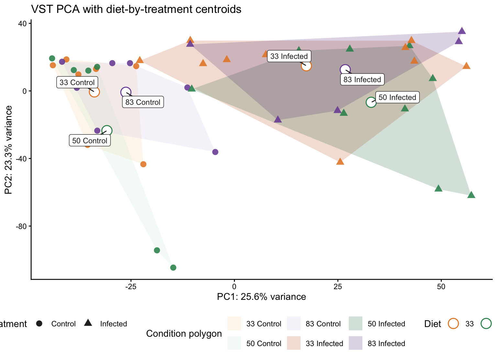
ggplot2::ggsave(file.path(out_dir, "vst_pca_condition_centroids.png"),
p_pca_centroids, width = 8, height = 5.8, dpi = 300)
write.csv(pca_scores, file.path(out_dir, "vst_pca_sample_scores.csv"),
row.names = FALSE)
write.csv(pca_centroids, file.path(out_dir, "vst_pca_condition_centroids.csv"),
row.names = FALSE)VST heatmap across samples
Before reading the infected-control tests, it helps to see the expression structure across all samples. This heatmap uses the most variable variance-stabilized genes, with diet and treatment annotations above the columns. The VST transformation is used because raw RNA-seq counts have mean-dependent variance; without transformation, very highly expressed genes can overwhelm the visual structure.
gene_variance <- apply(vst_mat, 1, var)
top_n <- min(params$top_variable_genes, length(gene_variance))
top_genes <- names(sort(gene_variance, decreasing = TRUE))[seq_len(top_n)]
annotation_col <- data.frame(
Diet = metadata$Diet,
Treatment = metadata$Treatment
)
rownames(annotation_col) <- colnames(vst_mat)
png(file.path(out_dir, "vst_top_variable_gene_heatmap.png"),
width = 1800, height = 1600, res = 180)
pheatmap::pheatmap(
vst_mat[top_genes, ],
scale = "row",
show_rownames = FALSE,
annotation_col = annotation_col,
main = paste("Top", top_n, "variable VST genes across samples")
)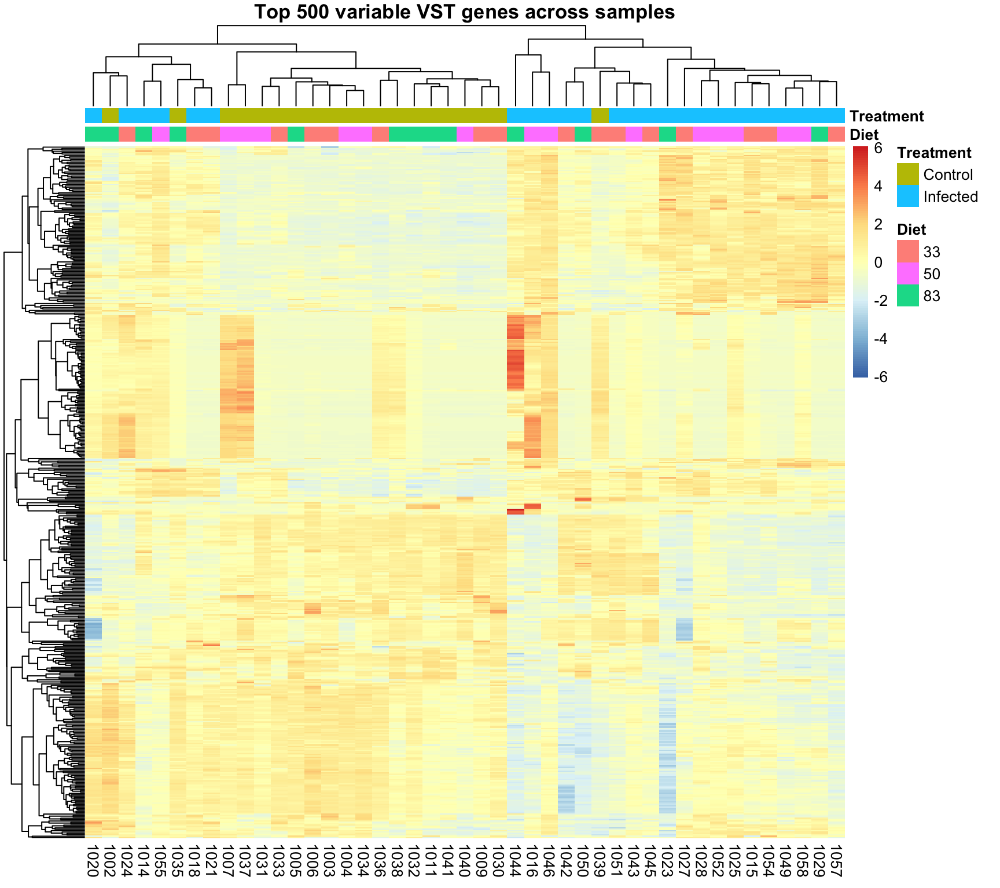
dev.off()quartz_off_screen
3 pheatmap::pheatmap(
vst_mat[top_genes, ],
scale = "row",
show_rownames = FALSE,
annotation_col = annotation_col,
main = paste("Top", top_n, "variable VST genes across samples")
)Run one infected-control test per diet
For each diet, the code keeps only samples from that diet and fits a
simple ~ Treatment DESeq2 model. This avoids averaging the
infection effect across diets. A positive log2 fold-change means higher
expression in infected samples; a negative log2 fold-change means higher
expression in controls. Genes are called significant only when they pass
both the adjusted p-value threshold and the absolute log2 fold-change
threshold.
diet_results <- list()
for (diet_level in levels(droplevels(metadata$Diet))) {
message("Running infection contrast for diet ", diet_level)
sample_keep <- metadata$Diet == diet_level
metadata_sub <- droplevels(metadata[sample_keep, ])
counts_sub <- counts[, sample_keep]
gene_keep <- rowSums(counts_sub) >= params$min_total_count
dds <- DESeq2::DESeqDataSetFromMatrix(
countData = counts_sub[gene_keep, ],
colData = metadata_sub,
design = ~ Treatment
)
dds <- DESeq2::DESeq(dds)
res <- DESeq2::results(dds,
contrast = c("Treatment", "Infected", "Control"),
alpha = params$alpha)
res_df <- as.data.frame(res)
res_df$gene_id <- rownames(res_df)
res_df$diet <- diet_level
res_df$significant <- !is.na(res_df$padj) &
res_df$padj < params$alpha &
abs(res_df$log2FoldChange) >= params$lfc_threshold
diet_results[[diet_level]] <- res_df
write.csv(res_df, file.path(out_dir,
paste0("DESeq2_infected_vs_control_diet_",
diet_level, ".csv")),
row.names = FALSE)
writeLines(res_df$gene_id[res_df$significant],
file.path(out_dir,
paste0("significant_genes_infection_diet_",
diet_level, ".txt")))
print(EnhancedVolcano::EnhancedVolcano(
res_df,
lab = res_df$gene_id,
x = "log2FoldChange",
y = "padj",
pCutoff = params$alpha,
FCcutoff = params$lfc_threshold,
title = paste("Infected vs control in diet", diet_level)
))
}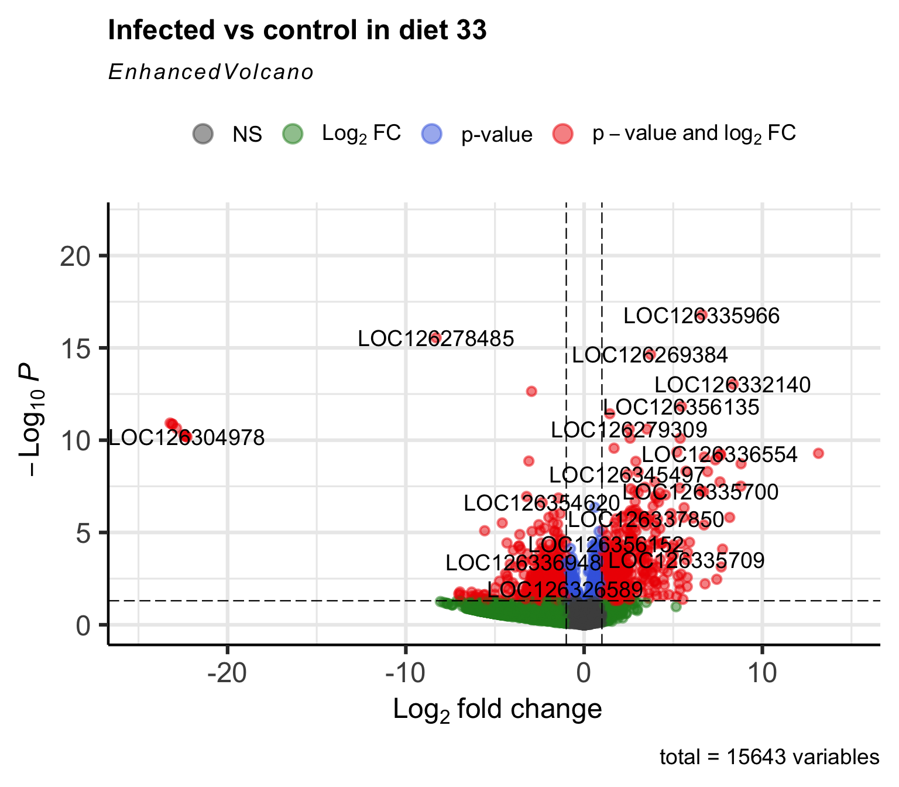
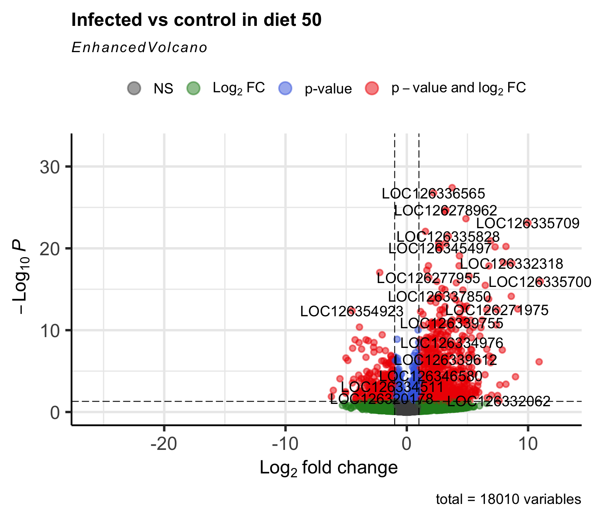
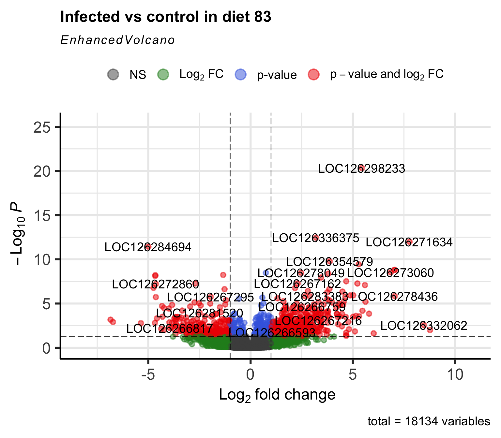
all_infection_results <- do.call(rbind, diet_results)
write.csv(all_infection_results,
file.path(out_dir, "all_infection_within_diet_results.csv"),
row.names = FALSE)Diet-specific DEG PCA
The PCA above uses all filtered genes and all samples, so it describes global expression structure. This section asks a narrower question for each diet: if we look only at the genes that are differentially expressed between infected and control samples within that diet, do the samples separate by treatment? This is closer to the DEG result itself, and it avoids using genes from another diet to explain the infected-control pattern.
make_deg_pca <- function(diet_level) {
res <- diet_results[[diet_level]]
deg_genes <- res$gene_id[res$significant & !is.na(res$gene_id)]
deg_genes <- intersect(deg_genes, rownames(vst_mat))
sample_keep <- metadata$Diet == diet_level
metadata_sub <- droplevels(metadata[sample_keep, ])
if (length(deg_genes) < 3 || nrow(metadata_sub) < 4) {
return(NULL)
}
mat <- vst_mat[deg_genes, metadata_sub$label, drop = FALSE]
keep_gene <- apply(mat, 1, var) > 0
mat <- mat[keep_gene, , drop = FALSE]
if (nrow(mat) < 3) return(NULL)
pca_local <- prcomp(t(mat), scale. = FALSE)
percent_local <- round(100 * (pca_local$sdev^2 / sum(pca_local$sdev^2)), 1)
scores <- data.frame(
label = rownames(pca_local$x),
PC1 = pca_local$x[, "PC1"],
PC2 = pca_local$x[, "PC2"],
Diet = metadata_sub$Diet,
Treatment = metadata_sub$Treatment,
check.names = FALSE
)
centroids <- aggregate(cbind(PC1, PC2) ~ Treatment, scores, mean)
names(centroids)[names(centroids) == "PC1"] <- "centroid_PC1"
names(centroids)[names(centroids) == "PC2"] <- "centroid_PC2"
treatment_hulls <- do.call(rbind, lapply(split(scores, scores$Treatment),
make_condition_hull))
p <- ggplot2::ggplot(scores, ggplot2::aes(PC1, PC2)) +
ggplot2::geom_polygon(
data = treatment_hulls,
ggplot2::aes(x = PC1, y = PC2, fill = Treatment, group = Treatment),
alpha = 0.22,
color = NA,
inherit.aes = FALSE
) +
ggplot2::geom_point(ggplot2::aes(color = Treatment, shape = Treatment),
size = 3.2, alpha = 0.9) +
ggplot2::geom_point(
data = centroids,
ggplot2::aes(x = centroid_PC1, y = centroid_PC2, color = Treatment),
shape = 21,
fill = "white",
stroke = 0.8,
size = 5,
inherit.aes = FALSE
) +
ggrepel::geom_label_repel(
data = centroids,
ggplot2::aes(x = centroid_PC1, y = centroid_PC2, label = Treatment),
color = "grey15",
fill = "white",
label.size = 0.18,
size = 3.2,
min.segment.length = 0,
inherit.aes = FALSE
) +
ggplot2::scale_color_manual(values = treatment_colors) +
ggplot2::scale_fill_manual(values = treatment_fills) +
ggplot2::theme_classic() +
ggplot2::theme(legend.position = "bottom") +
ggplot2::labs(
title = paste("Diet", diet_level, "PCA using infection DEGs only"),
subtitle = paste(length(deg_genes), "significant genes"),
x = paste0("PC1: ", percent_local[1], "% variance"),
y = paste0("PC2: ", percent_local[2], "% variance"),
color = "Treatment",
fill = "Treatment",
shape = "Treatment"
)
ggsave(file.path(out_dir,
paste0("diet_", diet_level, "_infection_deg_pca.png")),
p, width = 7.2, height = 5.2, dpi = 300)
write.csv(scores, file.path(out_dir,
paste0("diet_", diet_level,
"_infection_deg_pca_scores.csv")),
row.names = FALSE)
write.csv(centroids, file.path(out_dir,
paste0("diet_", diet_level,
"_infection_deg_pca_centroids.csv")),
row.names = FALSE)
p
}
for (diet_level in levels(droplevels(metadata$Diet))) {
p_local <- make_deg_pca(diet_level)
if (is.null(p_local)) {
cat("Diet", diet_level,
"does not have enough significant, variable genes for DEG-only PCA.\n")
} else {
print(p_local)
}
}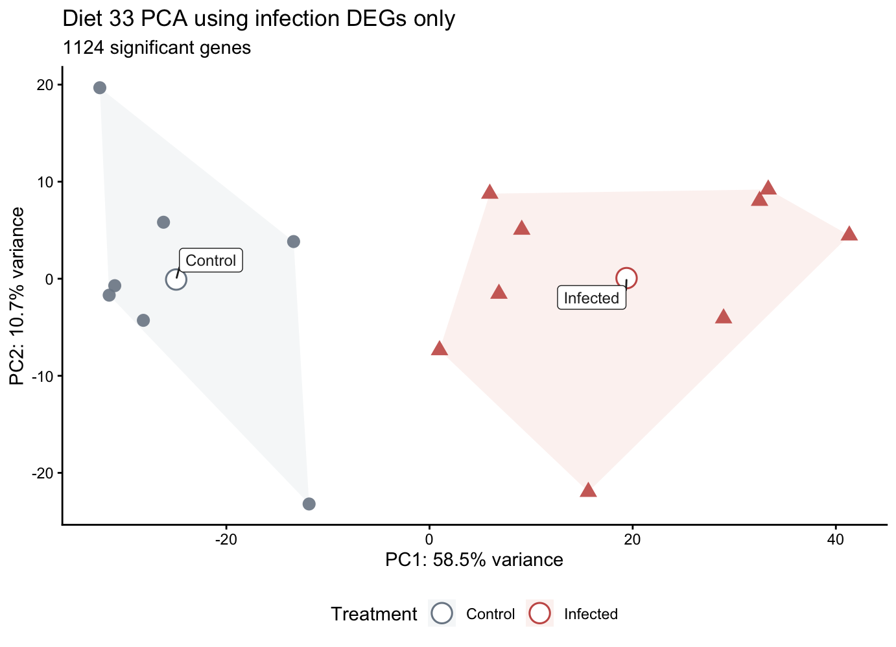
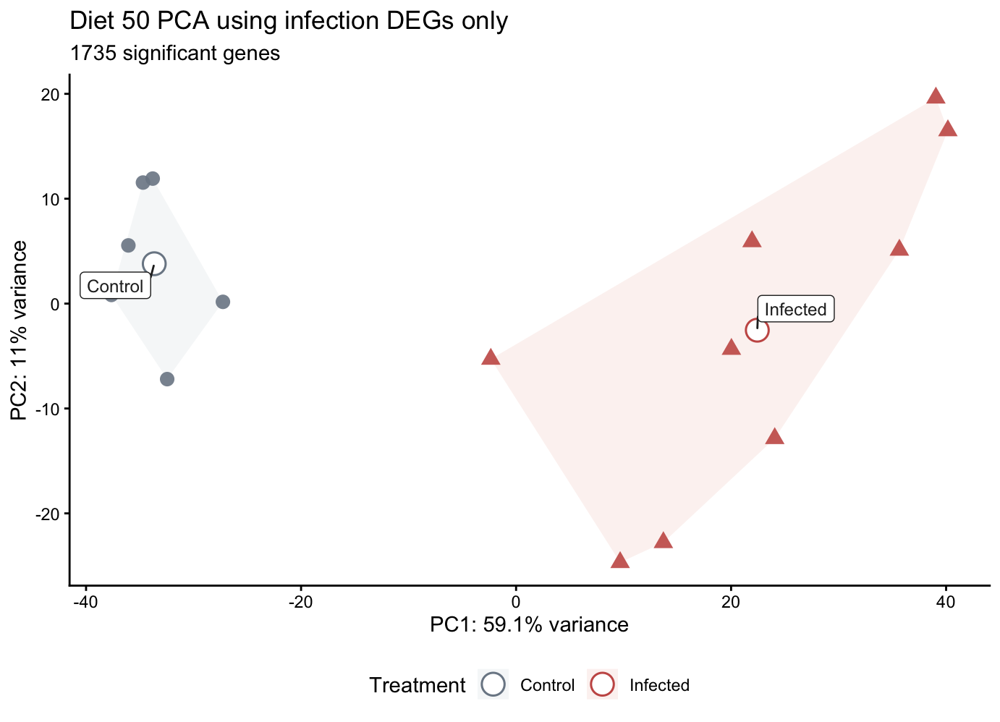

Within-diet MA plots and DEG heatmaps
The PCA shows whether samples separate using infection-responsive genes. The MA plots add the gene-level view for each diet: effect size on the y-axis and mean expression on the x-axis. The heatmaps then show the strongest infected-control DEGs within each diet using only samples from that diet, with the same blue-white-red VST palette used for the curated publication-style heatmap.
make_ma_plot <- function(diet_level) {
res <- diet_results[[diet_level]]
if (is.null(res) || nrow(res) == 0) return(NULL)
res$ma_class <- "Not significant"
res$ma_class[res$significant & res$log2FoldChange > 0] <- "Higher in infected"
res$ma_class[res$significant & res$log2FoldChange < 0] <- "Higher in control"
res$ma_class <- factor(res$ma_class,
levels = c("Higher in infected",
"Higher in control",
"Not significant"))
ggplot2::ggplot(res, ggplot2::aes(x = log10(baseMean + 1),
y = log2FoldChange,
color = ma_class)) +
ggplot2::geom_hline(yintercept = c(-params$lfc_threshold,
params$lfc_threshold),
linetype = "dashed", linewidth = 0.3,
color = "#6B7280") +
ggplot2::geom_hline(yintercept = 0, linewidth = 0.25,
color = "#111827") +
ggplot2::geom_point(alpha = 0.45, size = 0.7) +
ggplot2::scale_color_manual(values = c(
"Higher in infected" = treatment_colors[["Infected"]],
"Higher in control" = "#237C8E",
"Not significant" = "#D1D5DB"
)) +
ggplot2::theme_classic() +
ggplot2::theme(legend.position = "bottom") +
ggplot2::labs(
title = paste("Diet", diet_level, "infected-control MA plot"),
subtitle = paste(sum(res$significant, na.rm = TRUE),
"significant DEGs"),
x = "log10 mean normalized count + 1",
y = "log2 fold-change: infected / control",
color = "DEG class"
)
}
for (diet_level in levels(droplevels(metadata$Diet))) {
p_ma <- make_ma_plot(diet_level)
if (!is.null(p_ma)) {
print(p_ma)
ggplot2::ggsave(file.path(out_dir,
paste0("diet_", diet_level,
"_infection_ma_plot.png")),
p_ma, width = 7.2, height = 4.8, dpi = 300)
}
}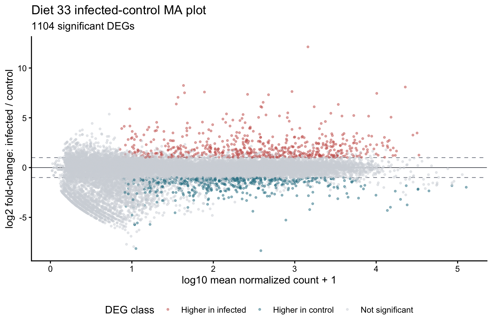
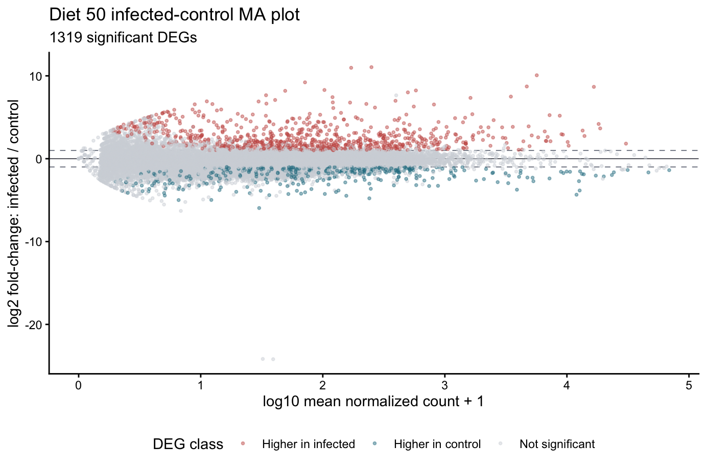
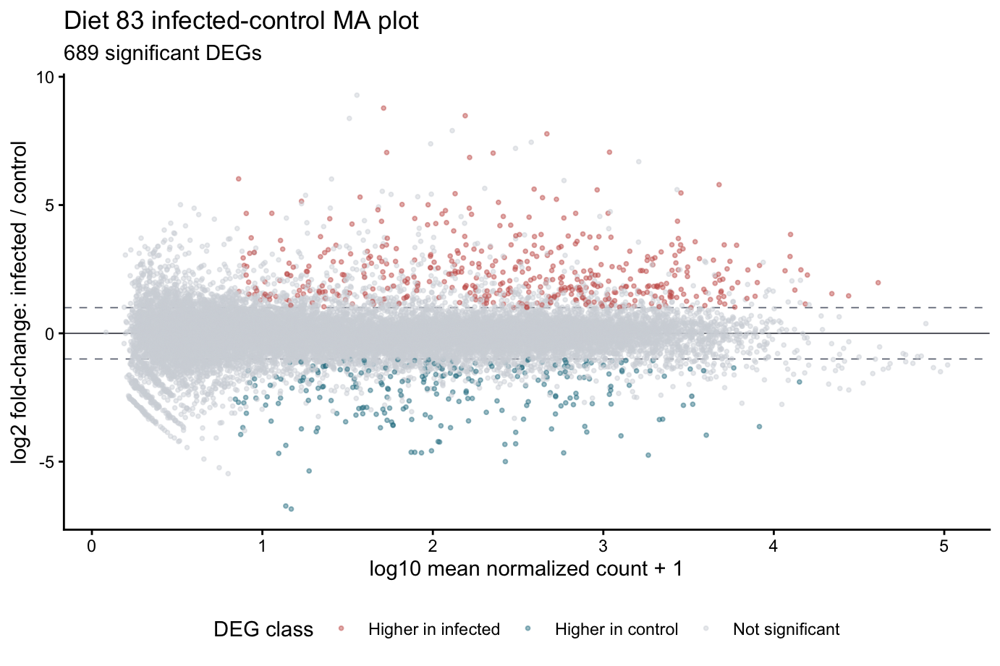
within_diet_heatmap_colors <- grDevices::colorRampPalette(
c("#237C8E", "#F7F3E8", "#C85A54")
)(101)
within_diet_heatmap_breaks <- seq(-3, 3, length.out = 102)
within_diet_display_dir <- file.path(project_dir, "docs", "figure",
"06-infection-within-diet-deg.Rmd")
dir.create(within_diet_display_dir, recursive = TRUE, showWarnings = FALSE)
make_within_diet_heatmap <- function(diet_level, n_genes = 60) {
res <- diet_results[[diet_level]]
if (is.null(res)) return(NULL)
degs <- res[res$significant & !is.na(res$padj) &
!is.na(res$log2FoldChange), ]
degs <- degs[order(degs$padj, -abs(degs$log2FoldChange)), ]
deg_genes <- intersect(head(degs$gene_id, n_genes), rownames(vst_mat))
if (length(deg_genes) < 3) return(NULL)
sample_keep <- metadata$Diet == diet_level
sample_order_diet <- metadata$label[sample_keep][order(
factor(as.character(metadata$Treatment[sample_keep]),
levels = c("Infected", "Control")),
metadata$label[sample_keep]
)]
sample_annotation_diet <- data.frame(
Treatment = metadata[sample_order_diet, "Treatment"]
)
rownames(sample_annotation_diet) <- sample_order_diet
gene_direction <- degs[match(deg_genes, degs$gene_id), ]
gene_annotation_diet <- data.frame(
Direction = ifelse(gene_direction$log2FoldChange > 0,
"Higher in infected", "Higher in control")
)
rownames(gene_annotation_diet) <- deg_genes
pheatmap::pheatmap(
vst_mat[deg_genes, sample_order_diet, drop = FALSE],
scale = "row",
color = within_diet_heatmap_colors,
breaks = within_diet_heatmap_breaks,
cluster_rows = TRUE,
cluster_cols = FALSE,
show_rownames = FALSE,
show_colnames = TRUE,
fontsize_col = 7,
annotation_col = sample_annotation_diet,
annotation_row = gene_annotation_diet,
annotation_colors = list(
Treatment = treatment_colors,
Direction = c("Higher in infected" = treatment_colors[["Infected"]],
"Higher in control" = "#237C8E")
),
main = paste("Diet", diet_level, "top infection DEGs"),
filename = file.path(out_dir,
paste0("diet_", diet_level,
"_infection_deg_vst_heatmap.png")),
width = 8,
height = 7.5
)
}
for (diet_level in levels(droplevels(metadata$Diet))) {
hm <- make_within_diet_heatmap(diet_level)
if (is.null(hm)) {
cat("Diet", diet_level,
"does not have enough significant DEGs for a within-diet heatmap.\n")
} else {
print(hm)
heatmap_out <- file.path(out_dir,
paste0("diet_", diet_level,
"_infection_deg_vst_heatmap.png"))
heatmap_display <- file.path(within_diet_display_dir,
paste0("diet-", diet_level,
"-infection-deg-vst-heatmap.png"))
file.copy(heatmap_out, heatmap_display, overwrite = TRUE)
heatmap_src <- file.path("figure", "06-infection-within-diet-deg.Rmd",
basename(heatmap_display))
cat(paste0(
'<h4>Diet ', diet_level, '</h4>',
'<p><img src="', heatmap_src,
'" alt="Diet ', diet_level, ' infection DEG VST heatmap" ',
'style="display:block;margin:auto;max-width:100%;height:auto;" /></p>'
))
}
}Diet 33
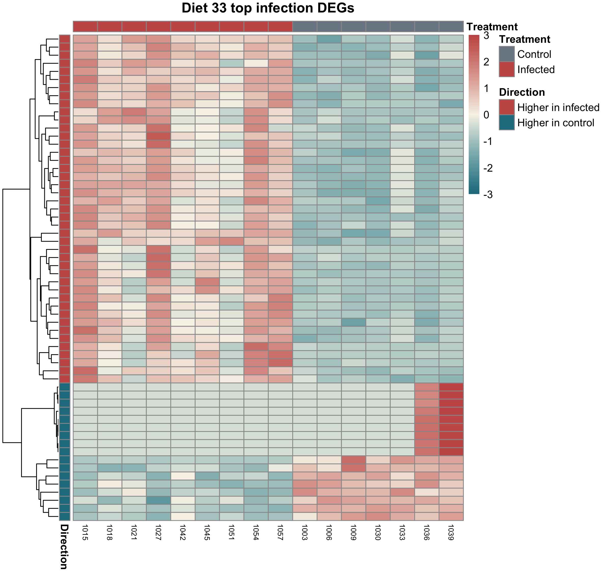
Diet 50
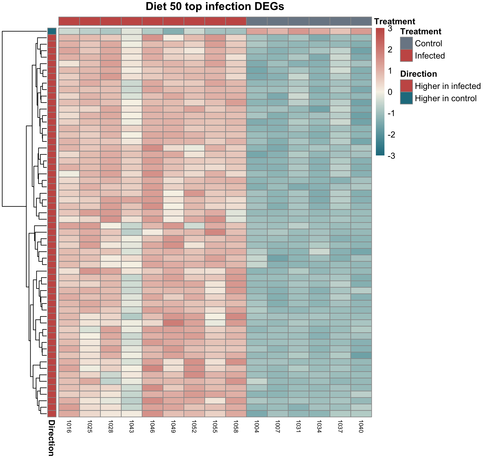
Diet 83
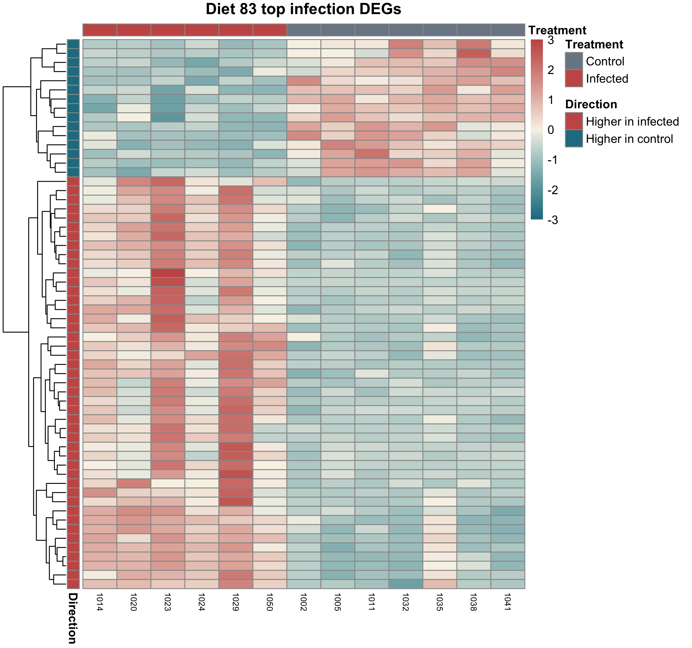
DEG count barplot
The volcano plots are good for seeing whether a contrast has many small effects or a few strong effects. This barplot answers the simpler question: how many genes pass the current DEG thresholds in each diet, and are they higher in infected or control samples?
sig_infection <- all_infection_results[all_infection_results$significant &
!is.na(all_infection_results$log2FoldChange), ]
sig_infection$diet <- factor(sig_infection$diet,
levels = levels(droplevels(metadata$Diet)))
sig_infection$direction <- ifelse(sig_infection$log2FoldChange > 0,
"Higher in infected",
"Higher in control")
sig_infection$direction <- factor(sig_infection$direction,
levels = c("Higher in infected",
"Higher in control"))
deg_bar_counts <- as.data.frame(table(
diet = sig_infection$diet,
direction = sig_infection$direction
))
names(deg_bar_counts)[3] <- "n_significant_genes"
p_deg_counts <- ggplot(deg_bar_counts,
aes(x = diet, y = n_significant_genes,
fill = direction)) +
geom_col(position = position_dodge(width = 0.78), width = 0.68) +
geom_text(aes(label = n_significant_genes),
position = position_dodge(width = 0.78),
vjust = -0.35, size = 3.2) +
scale_fill_manual(values = c("Higher in infected" = treatment_colors[["Infected"]],
"Higher in control" = treatment_colors[["Control"]])) +
theme_classic() +
labs(
title = "Significant infection DEGs within each diet",
x = "Diet",
y = "Number of significant genes",
fill = "Direction"
)
p_deg_counts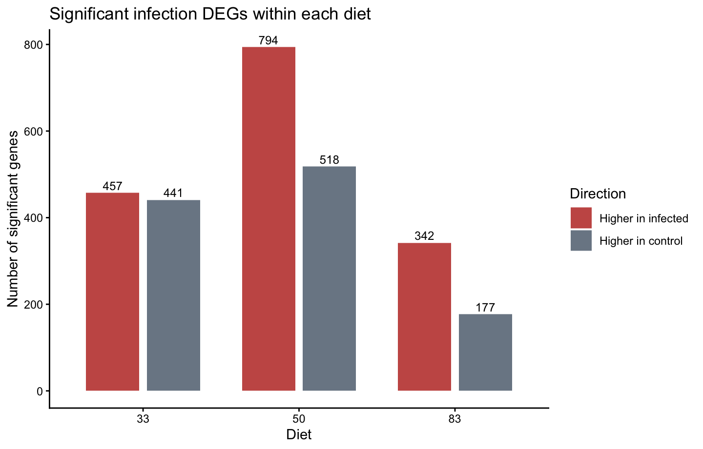
ggsave(file.path(out_dir, "infection_within_diet_deg_count_barplot.png"),
p_deg_counts, width = 7.5, height = 4.8, dpi = 300)
write.csv(deg_bar_counts,
file.path(out_dir, "infection_within_diet_direction_counts.csv"),
row.names = FALSE)Publication-style PCA and DEG burden panels
These two panels mirror the AGY figure style. The PCA panel keeps individual samples visible, marks diet-by-treatment centroids, and draws one arrow per diet from the control centroid to the infected centroid. The DEG burden panel uses a diverging axis so genes higher in infected samples and genes higher in controls are immediately comparable.
centroid_control <- pca_centroids[pca_centroids$Treatment == "Control", ]
centroid_infected <- pca_centroids[pca_centroids$Treatment == "Infected", ]
centroid_arrows <- merge(
centroid_control[, c("Diet", "centroid_PC1", "centroid_PC2")],
centroid_infected[, c("Diet", "centroid_PC1", "centroid_PC2")],
by = "Diet",
suffixes = c("_control", "_infected")
)
p_pca_arrows <- ggplot2::ggplot() +
ggplot2::geom_polygon(
data = pca_hulls,
ggplot2::aes(x = PC1, y = PC2, fill = Condition, group = Condition),
alpha = 0.16,
color = NA
) +
ggplot2::geom_point(
data = pca_scores,
ggplot2::aes(x = PC1, y = PC2, color = Diet, shape = Treatment),
size = 3,
alpha = 0.86
) +
ggplot2::geom_segment(
data = centroid_arrows,
ggplot2::aes(x = centroid_PC1_control, y = centroid_PC2_control,
xend = centroid_PC1_infected, yend = centroid_PC2_infected,
color = Diet),
linewidth = 0.85,
arrow = grid::arrow(length = grid::unit(0.18, "cm"))
) +
ggplot2::geom_point(
data = pca_centroids,
ggplot2::aes(x = centroid_PC1, y = centroid_PC2, color = Diet),
shape = 21,
fill = "white",
stroke = 1,
size = 5
) +
ggrepel::geom_label_repel(
data = pca_centroids,
ggplot2::aes(x = centroid_PC1, y = centroid_PC2, label = Condition),
color = "grey15",
fill = "white",
label.size = 0.18,
size = 3.0,
min.segment.length = 0
) +
ggplot2::scale_color_manual(values = diet_colors) +
ggplot2::scale_fill_manual(values = condition_surface_colors) +
ggplot2::theme_classic() +
ggplot2::theme(legend.position = "bottom",
legend.box = "vertical") +
ggplot2::guides(
fill = ggplot2::guide_legend(nrow = 2),
color = ggplot2::guide_legend(nrow = 1),
shape = ggplot2::guide_legend(nrow = 1)
) +
ggplot2::labs(
title = "PCA centroid shift after infection",
subtitle = "Arrows connect control and infected centroids within each diet",
x = paste0("PC1: ", percent_var[1], "% variance"),
y = paste0("PC2: ", percent_var[2], "% variance"),
color = "Diet",
fill = "Condition polygon",
shape = "Treatment"
)
p_pca_arrows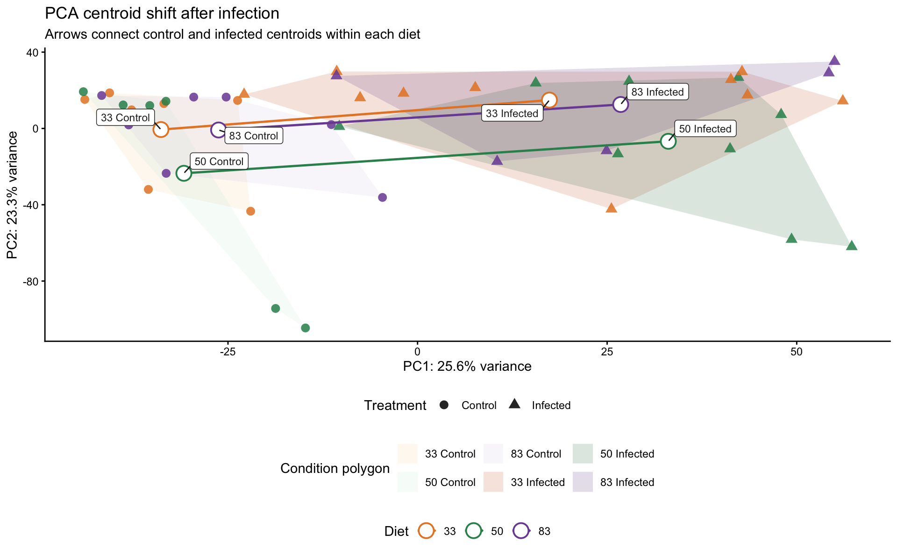
ggplot2::ggsave(file.path(out_dir, "pca_centroid_infection_arrows.png"),
p_pca_arrows, width = 10, height = 6.2, dpi = 300)
write.csv(centroid_arrows,
file.path(out_dir, "pca_centroid_infection_arrows.csv"),
row.names = FALSE)deg_burden <- deg_bar_counts
deg_burden$diet <- factor(deg_burden$diet,
levels = levels(droplevels(metadata$Diet)))
deg_burden$signed_n <- ifelse(deg_burden$direction == "Higher in infected",
deg_burden$n_significant_genes,
-deg_burden$n_significant_genes)
max_burden <- max(abs(deg_burden$signed_n), na.rm = TRUE)
p_deg_burden <- ggplot2::ggplot(
deg_burden,
ggplot2::aes(x = signed_n, y = diet, fill = direction)
) +
ggplot2::geom_vline(xintercept = 0, linewidth = 0.35, color = "grey35") +
ggplot2::geom_col(width = 0.68) +
ggplot2::geom_text(
ggplot2::aes(label = n_significant_genes,
hjust = ifelse(signed_n > 0, -0.15, 1.15)),
size = 3.2
) +
ggplot2::scale_x_continuous(labels = abs,
limits = c(-max_burden * 1.25,
max_burden * 1.25)) +
ggplot2::scale_fill_manual(values = c("Higher in infected" = treatment_colors[["Infected"]],
"Higher in control" = treatment_colors[["Control"]])) +
ggplot2::theme_classic() +
ggplot2::labs(
title = "Direction-aware infection DEG burden",
subtitle = "Right: higher in infected; left: higher in control",
x = "Number of significant genes",
y = "Diet",
fill = "Direction"
)
p_deg_burden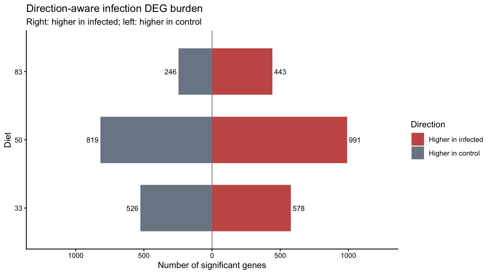
ggplot2::ggsave(file.path(out_dir, "infection_deg_burden_diverging_barplot.png"),
p_deg_burden, width = 8.6, height = 4.8, dpi = 300)
write.csv(deg_burden,
file.path(out_dir, "infection_deg_burden_diverging_counts.csv"),
row.names = FALSE)parse_gene_biotypes <- function(path) {
gff <- read.delim(path, comment.char = "#", header = FALSE, sep = "\t",
quote = "", stringsAsFactors = FALSE)
names(gff)[1:9] <- c("seqid", "source", "type", "start", "end", "score",
"strand", "phase", "attributes")
genes <- gff[gff$type == "gene", ]
data.frame(
gene_id = sub(".*gene=([^;]+).*", "\\1", genes$attributes),
gene_biotype = sub(".*gene_biotype=([^;]+).*", "\\1", genes$attributes),
raw_attributes = genes$attributes,
stringsAsFactors = FALSE
) |>
dplyr::filter(grepl("^LOC", gene_id)) |>
dplyr::mutate(gene_biotype = ifelse(gene_biotype == raw_attributes,
NA_character_, gene_biotype)) |>
dplyr::select(-raw_attributes) |>
dplyr::distinct()
}
classify_gene_class <- function(x) {
dplyr::case_when(
x == "protein_coding" ~ "Coding genes",
x == "lncRNA" ~ "Long non-coding RNA",
x == "rRNA" ~ "rRNA",
is.na(x) ~ "Other / unknown",
TRUE ~ "Other non-coding"
)
}
gene_biotypes <- parse_gene_biotypes(file.path(project_dir, params$gff_file))
biotype_burden <- sig_infection |>
dplyr::left_join(gene_biotypes, by = "gene_id") |>
dplyr::mutate(
Gene_class = classify_gene_class(gene_biotype),
signed_direction = ifelse(direction == "Higher in infected", 1, -1)
) |>
dplyr::distinct(diet, direction, gene_id, Gene_class, .keep_all = TRUE) |>
dplyr::count(diet, direction, signed_direction, Gene_class,
name = "n_significant_genes") |>
dplyr::mutate(
signed_n = signed_direction * n_significant_genes,
burden_class = paste(direction, Gene_class, sep = " - ")
)
biotype_totals <- biotype_burden |>
dplyr::group_by(diet, direction, signed_direction) |>
dplyr::summarise(
n_significant_genes = sum(n_significant_genes),
signed_n = dplyr::first(signed_direction) * n_significant_genes,
.groups = "drop"
)
max_biotype_burden <- max(abs(biotype_totals$signed_n), 1)
biotype_totals$label_x <- ifelse(
biotype_totals$signed_n > 0,
biotype_totals$signed_n + 0.04 * max_biotype_burden,
biotype_totals$signed_n - 0.04 * max_biotype_burden
)
biotype_burden$diet <- factor(biotype_burden$diet,
levels = levels(droplevels(metadata$Diet)))
biotype_totals$diet <- factor(biotype_totals$diet,
levels = levels(droplevels(metadata$Diet)))
biotype_colors <- c(
"Higher in infected - Coding genes" = "#8B1E3F",
"Higher in infected - Long non-coding RNA" = "#D98BA3",
"Higher in infected - rRNA" = "#F2B8A0",
"Higher in infected - Other non-coding" = "#F2B8A0",
"Higher in infected - Other / unknown" = "#E5B567",
"Higher in control - Coding genes" = "#1F5F8B",
"Higher in control - Long non-coding RNA" = "#93B7D4",
"Higher in control - rRNA" = "#B8C7D9",
"Higher in control - Other non-coding" = "#B8C7D9",
"Higher in control - Other / unknown" = "#C9CED6"
)
p_biotype_burden <- ggplot2::ggplot(
biotype_burden,
ggplot2::aes(x = signed_n, y = diet, fill = burden_class)
) +
ggplot2::geom_vline(xintercept = 0, linewidth = 0.35, color = "grey35") +
ggplot2::geom_col(width = 0.68) +
ggplot2::geom_text(
data = biotype_totals,
ggplot2::aes(x = label_x, y = diet, label = n_significant_genes),
inherit.aes = FALSE,
size = 3.2
) +
ggplot2::scale_x_continuous(labels = abs,
limits = c(-max_biotype_burden * 1.25,
max_biotype_burden * 1.25)) +
ggplot2::scale_fill_manual(values = biotype_colors, drop = FALSE) +
ggplot2::theme_classic() +
ggplot2::theme(
legend.position = "bottom",
legend.title = ggplot2::element_blank(),
legend.text = ggplot2::element_text(size = 8)
) +
ggplot2::labs(
title = "Direction-aware infection DEG burden by gene class",
subtitle = "This uses the rRNA-filtered master count matrix; rRNA should be absent after filtering",
x = "Number of significant genes",
y = "Diet"
)
p_biotype_burden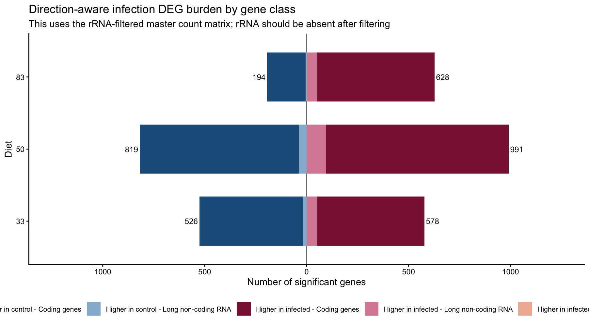
ggplot2::ggsave(file.path(out_dir,
"infection_deg_burden_by_biotype_diverging_barplot.png"),
p_biotype_burden, width = 9.4, height = 5.2, dpi = 300)
write.csv(biotype_burden,
file.path(out_dir, "infection_deg_burden_by_biotype_counts.csv"),
row.names = FALSE)Curated DEG VST heatmap
The full VST heatmap is a broad QC view. This heatmap is narrower: it selects strong infection-responsive DEGs and fat-body-relevant genes with eggNOG descriptions matching immune, storage, nutrition, lipid-transport, or detoxification keywords. Samples are ordered by infection status first and then diet instead of clustered, so the infected profiles appear together and diet-specific substructure can be compared directly. The gene annotations are kept deliberately simple: whether a gene is a significant infection DEG in at least one diet, and its functional theme. Genes are ordered first by DEG class and then by functional theme.
sig_for_heatmap <- all_infection_results[all_infection_results$significant &
!is.na(all_infection_results$padj) &
!is.na(all_infection_results$log2FoldChange), ]
sig_for_heatmap$direction <- ifelse(sig_for_heatmap$log2FoldChange > 0,
"Higher in infected",
"Higher in control")
sig_for_heatmap <- sig_for_heatmap[order(sig_for_heatmap$padj,
-abs(sig_for_heatmap$log2FoldChange)), ]
select_top_degs <- function(tab, n) {
tab <- tab[order(tab$padj, -abs(tab$log2FoldChange)), ]
head(tab, n)
}
curated_pieces <- split(sig_for_heatmap,
paste(sig_for_heatmap$diet,
sig_for_heatmap$direction, sep = "__"))
top_deg_rows <- do.call(rbind, lapply(curated_pieces, select_top_degs,
n = params$top_curated_degs_per_direction))
top_deg_rows$Selection <- "Top DEG"
read_emapper <- function(path) {
cols <- c(
"query", "seed_ortholog", "evalue", "score", "eggNOG_OGs",
"max_annot_lvl", "COG_category", "Description", "Preferred_name",
"GOs", "EC", "KEGG_ko", "KEGG_Pathway", "KEGG_Module",
"KEGG_Reaction", "KEGG_rclass", "BRITE", "KEGG_TC", "CAZy",
"BiGG_Reaction", "PFAMs"
)
tab <- read.delim(path, comment.char = "#", header = FALSE, sep = "\t",
quote = "", fill = TRUE)
names(tab) <- cols[seq_len(ncol(tab))]
tab$protein_id <- sub(".*(XP_[0-9]+[.][0-9]+).*", "\\1", tab$query)
tab
}
parse_cds_gene_bridge <- function(path) {
gff <- read.delim(path, comment.char = "#", header = FALSE, sep = "\t",
quote = "", stringsAsFactors = FALSE)
names(gff)[1:9] <- c("seqid", "source", "type", "start", "end", "score",
"strand", "phase", "attributes")
cds <- gff[gff$type == "CDS", ]
data.frame(
protein_id = sub(".*protein_id=([^;]+).*", "\\1", cds$attributes),
gene_id = sub(".*gene=([^;]+).*", "\\1", cds$attributes),
stringsAsFactors = FALSE
) |>
dplyr::filter(grepl("^XP_", protein_id), grepl("^LOC", gene_id)) |>
dplyr::distinct()
}
eggnog_path <- file.path(project_dir, params$eggnog_file)
gff_path <- file.path(project_dir, params$gff_file)
if (file.exists(eggnog_path) && file.exists(gff_path)) {
eggnog <- read_emapper(eggnog_path)
protein_to_gene <- parse_cds_gene_bridge(gff_path)
gene_annotation <- eggnog |>
dplyr::left_join(protein_to_gene, by = "protein_id") |>
dplyr::filter(!is.na(gene_id)) |>
dplyr::distinct(gene_id, .keep_all = TRUE) |>
dplyr::select(gene_id, Preferred_name, Description, GOs, KEGG_ko,
KEGG_Pathway, PFAMs)
} else {
gene_annotation <- data.frame(gene_id = character(),
Preferred_name = character(),
Description = character(),
GOs = character(),
KEGG_ko = character(),
KEGG_Pathway = character(),
PFAMs = character())
}
annotated_sig <- sig_for_heatmap |>
dplyr::left_join(gene_annotation, by = "gene_id")
annotation_text <- apply(annotated_sig[, c("Preferred_name", "Description",
"GOs", "KEGG_ko", "KEGG_Pathway",
"PFAMs")],
1, paste, collapse = " ")
immune_keywords <- paste(c(
"immune", "immun", "defensin", "antimicrobial", "lysozyme",
"phenoloxidase", "prophenoloxidase", "toll", "imd", "jak", "stat",
"lectin", "peptidoglycan", "hemocyte", "serpin", "clip", "thioester",
"pathogen", "fungal", "fungus", "melanization"
), collapse = "|")
nutrition_keywords <- paste(c(
"nutrition", "nutrient", "metabolism", "metabolic", "lipid", "fatty",
"carbohydrate", "glucose", "glycogen", "trehalose", "insulin",
"amino acid", "protease", "peptidase", "trypsin", "chymotrypsin",
"lipase", "amylase", "digestion", "digestive", "transporter"
), collapse = "|")
storage_keywords <- paste(c(
"storage protein", "hexamerin", "arylphorin", "hemocyanin",
"vitellogenin", "lipophorin", "apolipophorin", "nutrient reservoir"
), collapse = "|")
detox_keywords <- paste(c(
"detox", "xenobiotic", "cytochrome p450", "p450", "glutathione",
"peroxidase", "oxidative stress", "superoxide", "catalase"
), collapse = "|")
classify_functional_theme <- function(text) {
dplyr::case_when(
grepl(immune_keywords, text, ignore.case = TRUE) ~ "Immune-related",
grepl(storage_keywords, text, ignore.case = TRUE) ~ "Storage/lipid transport",
grepl(detox_keywords, text, ignore.case = TRUE) ~ "Detoxification/stress",
grepl(nutrition_keywords, text, ignore.case = TRUE) ~ "Nutrition/metabolism",
TRUE ~ "Other strong DEG"
)
}
gene_deg_summary <- sig_for_heatmap |>
dplyr::group_by(gene_id) |>
dplyr::summarise(
DEG_diet_count = dplyr::n_distinct(diet),
DEG_diets = paste(sort(unique(as.character(diet))), collapse = ", "),
DEG_direction_summary = dplyr::if_else(
dplyr::n_distinct(direction) == 1,
dplyr::first(direction),
"Mixed directions"
),
min_padj = min(padj, na.rm = TRUE),
max_abs_lfc = max(abs(log2FoldChange), na.rm = TRUE),
.groups = "drop"
) |>
dplyr::mutate(
DEG_class = "DEG"
)
annotation_for_heatmap <- gene_annotation |>
dplyr::filter(gene_id %in% rownames(vst_mat)) |>
dplyr::mutate(
curated_annotation_text = paste(Preferred_name, Description, GOs, KEGG_ko,
KEGG_Pathway, PFAMs),
Functional_theme = classify_functional_theme(curated_annotation_text)
)
theme_rows <- annotation_for_heatmap |>
dplyr::left_join(gene_deg_summary, by = "gene_id") |>
dplyr::mutate(
DEG_class = dplyr::if_else(is.na(DEG_class), "Not DEG", DEG_class),
min_padj = dplyr::if_else(is.na(min_padj), Inf, min_padj),
max_abs_lfc = dplyr::if_else(is.na(max_abs_lfc), 0, max_abs_lfc),
vst_variance = apply(vst_mat[gene_id, , drop = FALSE], 1, var)
) |>
dplyr::filter(Functional_theme != "Other strong DEG") |>
dplyr::group_by(Functional_theme, DEG_class) |>
dplyr::arrange(min_padj, dplyr::desc(max_abs_lfc),
dplyr::desc(vst_variance), .by_group = TRUE) |>
dplyr::slice_head(n = params$top_functional_degs_per_theme) |>
dplyr::ungroup() |>
dplyr::mutate(Selection = "Functional candidate")
curated_degs <- top_deg_rows |>
dplyr::select(gene_id, diet, direction, padj, log2FoldChange, Selection) |>
dplyr::left_join(annotation_for_heatmap, by = "gene_id") |>
dplyr::left_join(gene_deg_summary, by = "gene_id", suffix = c("", ".summary")) |>
dplyr::mutate(
Functional_theme = dplyr::if_else(is.na(Functional_theme),
"Other strong DEG",
Functional_theme),
DEG_class = "DEG"
) |>
dplyr::bind_rows(theme_rows) |>
dplyr::mutate(
DEG_class = dplyr::if_else(is.na(DEG_class), "Not DEG", DEG_class),
min_padj = dplyr::if_else(is.na(min_padj), Inf, min_padj),
max_abs_lfc = dplyr::if_else(is.na(max_abs_lfc), 0, max_abs_lfc),
Functional_theme = factor(
Functional_theme,
levels = c("Immune-related", "Storage/lipid transport",
"Nutrition/metabolism", "Detoxification/stress",
"Other strong DEG")
),
DEG_class = factor(DEG_class, levels = c("DEG", "Not DEG"))
) |>
dplyr::arrange(DEG_class, Functional_theme, min_padj,
dplyr::desc(max_abs_lfc)) |>
dplyr::distinct(gene_id, .keep_all = TRUE)
curated_genes <- curated_degs$gene_id[curated_degs$gene_id %in% rownames(vst_mat)]
treatment_order <- factor(as.character(metadata$Treatment),
levels = c("Infected", "Control"))
sample_order <- metadata$label[order(treatment_order, metadata$Diet,
metadata$label)]
sample_annotation <- data.frame(
Treatment = metadata[sample_order, "Treatment"],
Diet = metadata[sample_order, "Diet"]
)
rownames(sample_annotation) <- sample_order
gene_annotation_display <- curated_degs[match(curated_genes, curated_degs$gene_id),
c("DEG_class",
"Functional_theme"), drop = FALSE]
rownames(gene_annotation_display) <- curated_genes
label_source <- curated_degs[match(curated_genes, curated_degs$gene_id), ]
label_text <- ifelse(!is.na(label_source$Preferred_name) &
label_source$Preferred_name != "-",
label_source$Preferred_name,
label_source$Description)
label_text[is.na(label_text) | label_text == "-" | label_text == ""] <- "unannotated"
label_text <- substr(label_text, 1, 45)
col_labels <- paste(curated_genes, label_text, sep = " | ")
find_gaps <- function(groups) {
groups <- as.character(groups)
if (length(groups) < 2) {
return(integer())
}
which(groups[-length(groups)] != groups[-1])
}
sample_gaps <- find_gaps(paste(sample_annotation$Treatment,
sample_annotation$Diet))
gene_gaps <- find_gaps(paste(gene_annotation_display$DEG_class,
gene_annotation_display$Functional_theme))
annotation_colors <- list(
Diet = diet_colors,
Treatment = treatment_colors,
DEG_class = c("DEG" = "#111827",
"Not DEG" = "#D1D5DB"),
Functional_theme = c("Immune-related" = "#237C8E",
"Storage/lipid transport" = "#D7832F",
"Nutrition/metabolism" = "#B8643C",
"Detoxification/stress" = "#8C6D31",
"Other strong DEG" = "#9CA3AF")
)
heatmap_expression_colors <- grDevices::colorRampPalette(
c("#237C8E", "#F7F3E8", "#C85A54")
)(101)
heatmap_expression_breaks <- seq(-3, 3, length.out = 102)
heatmap_display <- pheatmap::pheatmap(
t(vst_mat[curated_genes, sample_order, drop = FALSE]),
scale = "column",
color = heatmap_expression_colors,
breaks = heatmap_expression_breaks,
cluster_rows = FALSE,
cluster_cols = FALSE,
gaps_row = sample_gaps,
gaps_col = gene_gaps,
show_rownames = TRUE,
show_colnames = FALSE,
labels_col = col_labels,
fontsize_row = 6,
annotation_col = gene_annotation_display,
annotation_row = sample_annotation,
annotation_colors = annotation_colors,
main = "Curated fat body infection-response genes",
filename = file.path(out_dir, "curated_infection_deg_vst_heatmap.png"),
width = 14,
height = 11
)
labeled_heatmap_display <- pheatmap::pheatmap(
t(vst_mat[curated_genes, sample_order, drop = FALSE]),
scale = "column",
color = heatmap_expression_colors,
breaks = heatmap_expression_breaks,
cluster_rows = FALSE,
cluster_cols = FALSE,
gaps_row = sample_gaps,
gaps_col = gene_gaps,
show_rownames = TRUE,
show_colnames = TRUE,
labels_col = col_labels,
fontsize_row = 6,
fontsize_col = 4.5,
angle_col = 90,
annotation_col = gene_annotation_display,
annotation_row = sample_annotation,
annotation_colors = annotation_colors,
main = "Curated fat body infection-response genes with annotations",
filename = file.path(out_dir,
"curated_infection_deg_vst_heatmap_labeled.png"),
width = 22,
height = 12
)
display_dir <- file.path(project_dir, "docs", "figure",
"06-infection-within-diet-deg.Rmd")
dir.create(display_dir, recursive = TRUE, showWarnings = FALSE)
display_png <- file.path(display_dir, "curated-deg-heatmap-display.png")
file.copy(file.path(out_dir, "curated_infection_deg_vst_heatmap.png"),
display_png, overwrite = TRUE)[1] TRUEcurated_heatmap_src <- file.path("figure", "06-infection-within-diet-deg.Rmd",
"curated-deg-heatmap-display.png")
labeled_display_png <- file.path(display_dir,
"curated-deg-heatmap-labeled-display.png")
file.copy(file.path(out_dir, "curated_infection_deg_vst_heatmap_labeled.png"),
labeled_display_png, overwrite = TRUE)[1] TRUElabeled_curated_heatmap_src <- file.path(
"figure", "06-infection-within-diet-deg.Rmd",
"curated-deg-heatmap-labeled-display.png"
)
write.csv(curated_degs,
file.path(out_dir, "curated_infection_deg_heatmap_genes.csv"),
row.names = FALSE)
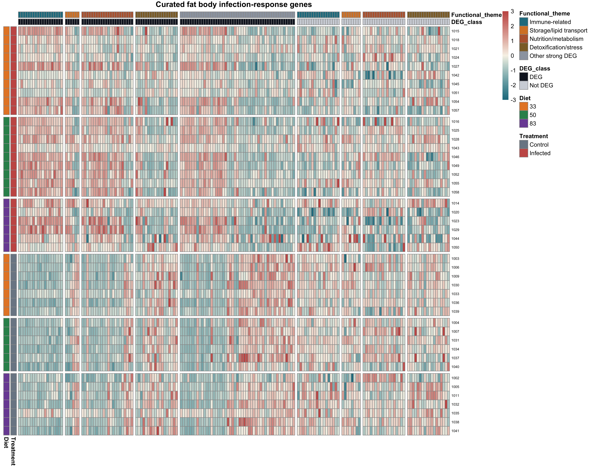
Labeled curated heatmap
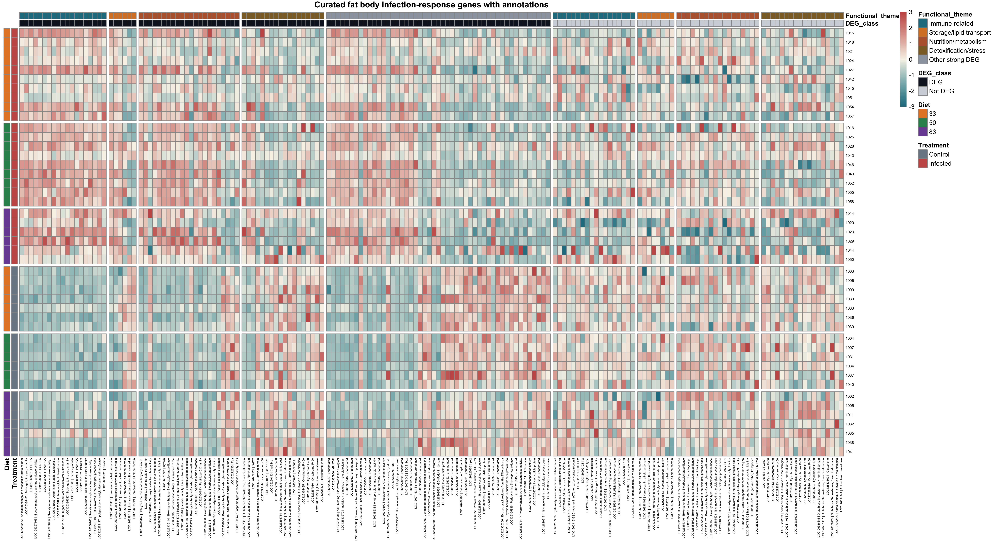
Curated immune and nutrition DEG summary
This compact figure uses the same curated gene table as the heatmap, but summarizes it by diet, direction, and biological theme. It is easier to read quickly than the full heatmap and is the better candidate for a publication-style overview panel.
curated_summary <- curated_degs |>
dplyr::filter(Functional_theme %in% c("Immune-related",
"Nutrition/metabolism")) |>
dplyr::mutate(
diet = factor(diet, levels = levels(droplevels(metadata$Diet))),
direction = factor(direction, levels = c("Higher in infected",
"Higher in control")),
Functional_theme = factor(Functional_theme,
levels = c("Immune-related",
"Nutrition/metabolism"))
) |>
dplyr::count(diet, direction, Functional_theme,
name = "n_curated_degs")
p_curated_summary <- ggplot(curated_summary,
aes(x = diet, y = n_curated_degs,
fill = Functional_theme)) +
geom_col(position = position_dodge(width = 0.76), width = 0.68) +
geom_text(aes(label = n_curated_degs),
position = position_dodge(width = 0.76),
vjust = -0.35, size = 3.1) +
facet_wrap(~ direction) +
scale_fill_manual(values = c("Immune-related" = "#237C8E",
"Nutrition/metabolism" = "#B8643C")) +
theme_classic() +
theme(legend.position = "bottom") +
labs(
title = "Curated immune and nutrition DEGs",
subtitle = "Significant infected-control DEGs selected from eggNOG descriptions",
x = "Diet",
y = "Number of curated DEGs",
fill = "Functional theme"
)
p_curated_summary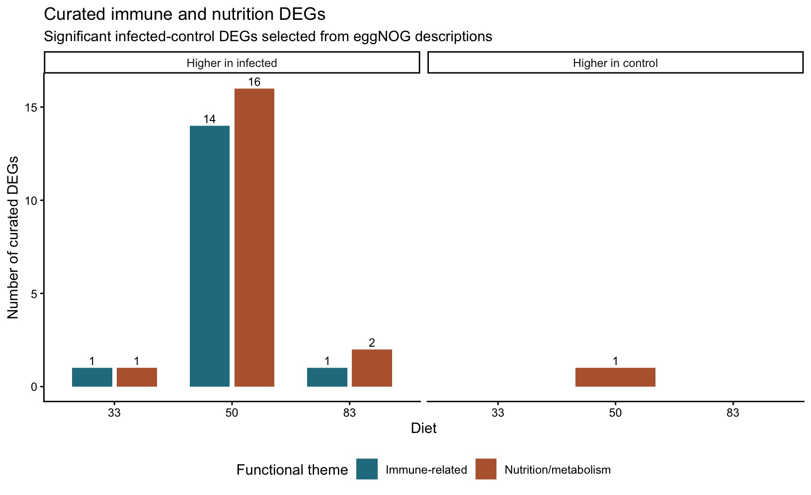
ggsave(file.path(out_dir, "curated_immune_nutrition_deg_barplot.png"),
p_curated_summary, width = 8.5, height = 5.2, dpi = 300)
write.csv(curated_summary,
file.path(out_dir, "curated_immune_nutrition_deg_summary.csv"),
row.names = FALSE)curated_gene_list <- curated_degs |>
dplyr::filter(Functional_theme %in% c("Immune-related",
"Nutrition/metabolism",
"Storage/lipid transport")) |>
dplyr::mutate(
Preferred_name = ifelse(is.na(Preferred_name) | Preferred_name == "-",
"", Preferred_name),
Description = ifelse(is.na(Description) | Description == "-",
"", Description),
DEG_diets = ifelse(is.na(DEG_diets), "", DEG_diets),
DEG_direction_summary = ifelse(is.na(DEG_direction_summary), "",
DEG_direction_summary),
min_padj = ifelse(is.infinite(min_padj), NA_real_, min_padj)
) |>
dplyr::select(
gene_id, Preferred_name, Description, Functional_theme, DEG_class,
DEG_diets, DEG_direction_summary, min_padj, max_abs_lfc
) |>
dplyr::arrange(DEG_class, Functional_theme, min_padj,
dplyr::desc(max_abs_lfc))
DT::datatable(
curated_gene_list,
rownames = FALSE,
options = list(pageLength = 20, scrollX = TRUE),
caption = "Curated immune, nutrition, and storage/lipid-transport genes shown in the heatmap"
)write.csv(curated_gene_list,
file.path(out_dir, "curated_immune_nutrition_gene_list.csv"),
row.names = FALSE)Summary
The summary table collapses each diet-specific result into a total DEG count. It is deliberately simple, because the direction-aware barplot above carries the visual comparison and the full CSV files keep the gene-level statistics.
summary_table <- aggregate(significant ~ diet, all_infection_results, sum)
names(summary_table)[2] <- "n_significant_genes"
knitr::kable(summary_table)| diet | n_significant_genes |
|---|---|
| 33 | 1216 |
| 50 | 1810 |
| 83 | 737 |
write.csv(summary_table, file.path(out_dir, "infection_within_diet_summary.csv"),
row.names = FALSE)writeLines(capture.output(sessionInfo()),
file.path(out_dir, "sessionInfo.txt"))
sessionInfo()R version 4.6.0 (2026-04-24)
Platform: aarch64-apple-darwin23
Running under: macOS Tahoe 26.5.2
Matrix products: default
BLAS: /Library/Frameworks/R.framework/Versions/4.6/Resources/lib/libRblas.0.dylib
LAPACK: /Library/Frameworks/R.framework/Versions/4.6/Resources/lib/libRlapack.dylib; LAPACK version 3.12.1
locale:
[1] C.UTF-8/C.UTF-8/C.UTF-8/C/C.UTF-8/C.UTF-8
time zone: Asia/Tokyo
tzcode source: internal
attached base packages:
[1] stats graphics grDevices utils datasets methods base
other attached packages:
[1] ggplot2_4.0.3 workflowr_1.7.2
loaded via a namespace (and not attached):
[1] SummarizedExperiment_1.42.0 gtable_0.3.6
[3] xfun_0.57 bslib_0.10.0
[5] htmlwidgets_1.6.4 ggrepel_0.9.8
[7] processx_3.9.0 Biobase_2.72.0
[9] lattice_0.22-9 callr_3.7.6
[11] crosstalk_1.2.2 vctrs_0.7.3
[13] tools_4.6.0 generics_0.1.4
[15] stats4_4.6.0 parallel_4.6.0
[17] tibble_3.3.1 pkgconfig_2.0.3
[19] pheatmap_1.0.13 Matrix_1.7-5
[21] RColorBrewer_1.1-3 EnhancedVolcano_1.30.0
[23] S7_0.2.2 S4Vectors_0.50.1
[25] lifecycle_1.0.5 compiler_4.6.0
[27] farver_2.1.2 stringr_1.6.0
[29] git2r_0.36.2 textshaping_1.0.5
[31] DESeq2_1.52.0 getPass_0.2-4
[33] Seqinfo_1.2.0 codetools_0.2-20
[35] httpuv_1.6.17 htmltools_0.5.9
[37] sass_0.4.10 yaml_2.3.12
[39] later_1.4.8 pillar_1.11.1
[41] jquerylib_0.1.4 whisker_0.4.1
[43] DT_0.34.0 BiocParallel_1.46.0
[45] cachem_1.1.0 DelayedArray_0.38.1
[47] abind_1.4-8 locfit_1.5-9.12
[49] tidyselect_1.2.1 digest_0.6.39
[51] stringi_1.8.7 dplyr_1.2.1
[53] labeling_0.4.3 rprojroot_2.1.1
[55] fastmap_1.2.0 grid_4.6.0
[57] cli_3.6.6 SparseArray_1.12.2
[59] magrittr_2.0.5 S4Arrays_1.12.0
[61] dichromat_2.0-0.1 withr_3.0.2
[63] scales_1.4.0 promises_1.5.0
[65] rmarkdown_2.31 XVector_0.52.0
[67] httr_1.4.8 matrixStats_1.5.0
[69] otel_0.2.0 ragg_1.5.2
[71] evaluate_1.0.5 knitr_1.51
[73] GenomicRanges_1.64.0 IRanges_2.46.0
[75] rlang_1.2.0 Rcpp_1.1.1-1.1
[77] glue_1.8.1 BiocGenerics_0.58.0
[79] rstudioapi_0.18.0 jsonlite_2.0.0
[81] R6_2.6.1 systemfonts_1.3.2
[83] MatrixGenerics_1.24.0 fs_2.1.0
sessionInfo()R version 4.6.0 (2026-04-24)
Platform: aarch64-apple-darwin23
Running under: macOS Tahoe 26.5.2
Matrix products: default
BLAS: /Library/Frameworks/R.framework/Versions/4.6/Resources/lib/libRblas.0.dylib
LAPACK: /Library/Frameworks/R.framework/Versions/4.6/Resources/lib/libRlapack.dylib; LAPACK version 3.12.1
locale:
[1] C.UTF-8/C.UTF-8/C.UTF-8/C/C.UTF-8/C.UTF-8
time zone: Asia/Tokyo
tzcode source: internal
attached base packages:
[1] stats graphics grDevices utils datasets methods base
other attached packages:
[1] ggplot2_4.0.3 workflowr_1.7.2
loaded via a namespace (and not attached):
[1] SummarizedExperiment_1.42.0 gtable_0.3.6
[3] xfun_0.57 bslib_0.10.0
[5] htmlwidgets_1.6.4 ggrepel_0.9.8
[7] processx_3.9.0 Biobase_2.72.0
[9] lattice_0.22-9 callr_3.7.6
[11] crosstalk_1.2.2 vctrs_0.7.3
[13] tools_4.6.0 generics_0.1.4
[15] stats4_4.6.0 parallel_4.6.0
[17] tibble_3.3.1 pkgconfig_2.0.3
[19] pheatmap_1.0.13 Matrix_1.7-5
[21] RColorBrewer_1.1-3 EnhancedVolcano_1.30.0
[23] S7_0.2.2 S4Vectors_0.50.1
[25] lifecycle_1.0.5 compiler_4.6.0
[27] farver_2.1.2 stringr_1.6.0
[29] git2r_0.36.2 textshaping_1.0.5
[31] DESeq2_1.52.0 getPass_0.2-4
[33] Seqinfo_1.2.0 codetools_0.2-20
[35] httpuv_1.6.17 htmltools_0.5.9
[37] sass_0.4.10 yaml_2.3.12
[39] later_1.4.8 pillar_1.11.1
[41] jquerylib_0.1.4 whisker_0.4.1
[43] DT_0.34.0 BiocParallel_1.46.0
[45] cachem_1.1.0 DelayedArray_0.38.1
[47] abind_1.4-8 locfit_1.5-9.12
[49] tidyselect_1.2.1 digest_0.6.39
[51] stringi_1.8.7 dplyr_1.2.1
[53] labeling_0.4.3 rprojroot_2.1.1
[55] fastmap_1.2.0 grid_4.6.0
[57] cli_3.6.6 SparseArray_1.12.2
[59] magrittr_2.0.5 S4Arrays_1.12.0
[61] dichromat_2.0-0.1 withr_3.0.2
[63] scales_1.4.0 promises_1.5.0
[65] rmarkdown_2.31 XVector_0.52.0
[67] httr_1.4.8 matrixStats_1.5.0
[69] otel_0.2.0 ragg_1.5.2
[71] evaluate_1.0.5 knitr_1.51
[73] GenomicRanges_1.64.0 IRanges_2.46.0
[75] rlang_1.2.0 Rcpp_1.1.1-1.1
[77] glue_1.8.1 BiocGenerics_0.58.0
[79] rstudioapi_0.18.0 jsonlite_2.0.0
[81] R6_2.6.1 systemfonts_1.3.2
[83] MatrixGenerics_1.24.0 fs_2.1.0